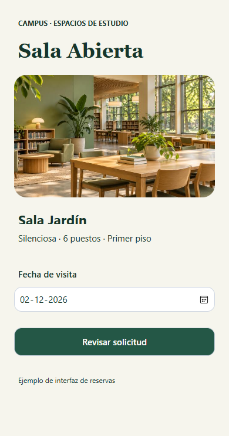
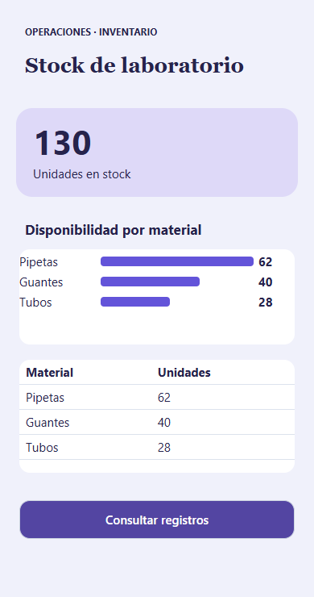
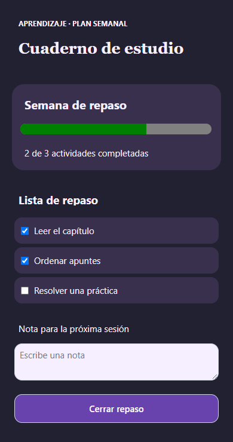
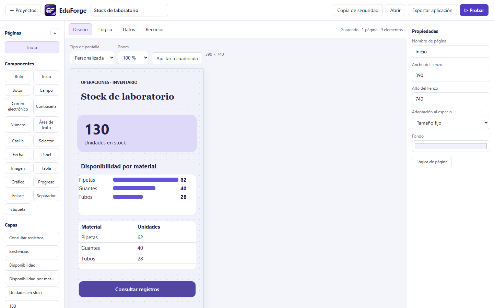
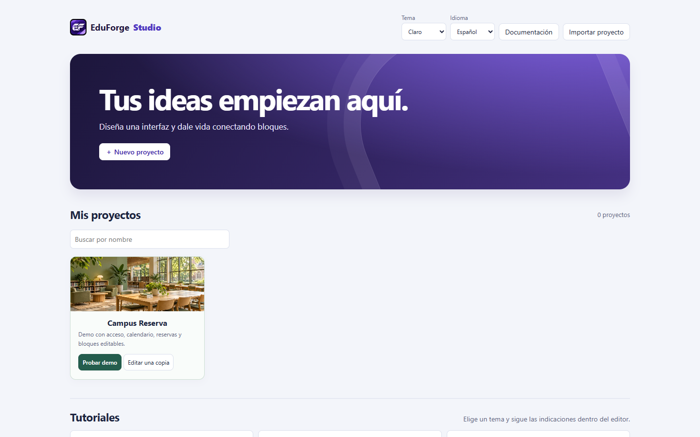

Crea software.
Aprende construyendo.
Diseña interfaces, conecta bloques y convierte tus ideas en aplicaciones funcionales. Un estudio visual gratuito para estudiantes de cualquier carrera.
- Gratis
- Funciona offline
- Sin cuenta
Aplicaciones hechas en Studio
Tres proyectos de ejemplo muestran cómo combinar componentes, datos y lógica en una interfaz propia.



De la idea a la aplicación
Diseña en el lienzo
Añade campos, botones e imágenes. Organiza las capas y ajusta la interfaz desde el inspector.
Conecta bloques
Define eventos y acciones, trabaja con tablas y prueba el resultado desde el editor.
Exporta tu aplicación
Genera HTML independiente o un ejecutable de 64 bits para Windows.



Explora Campus Reserva
Abre el ejemplo incluido y elige Editar una copia. Puedes probar el formulario, registrar una reserva e intercambiar datos con CSV.
Leer la documentación
En el aula
Como estudiante, puedes convertir un problema de tu carrera en un prototipo. Como docente, puedes partir de una práctica guiada y revisar el diseño, la lógica y los datos del proyecto.